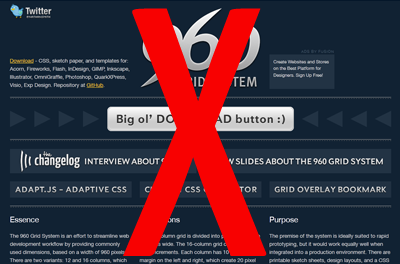
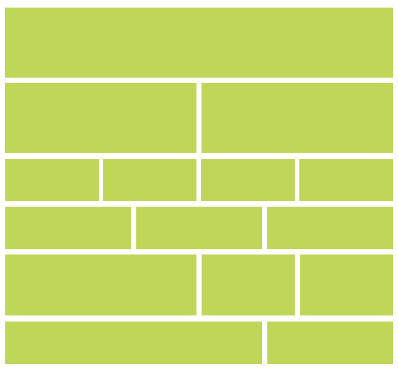
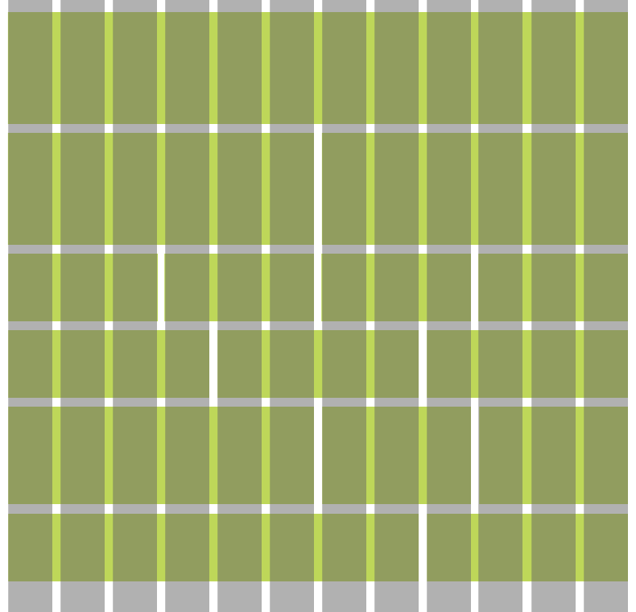
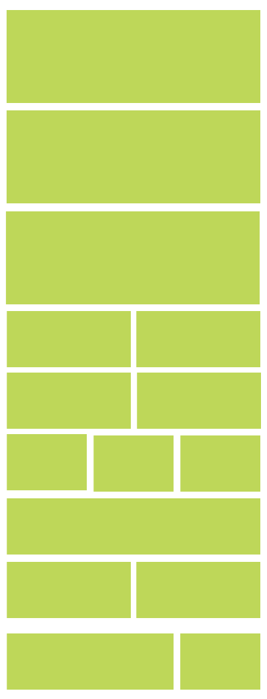
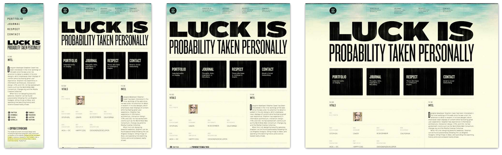
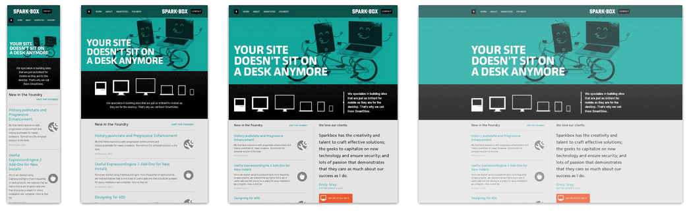
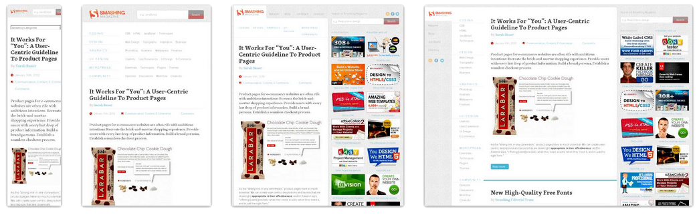
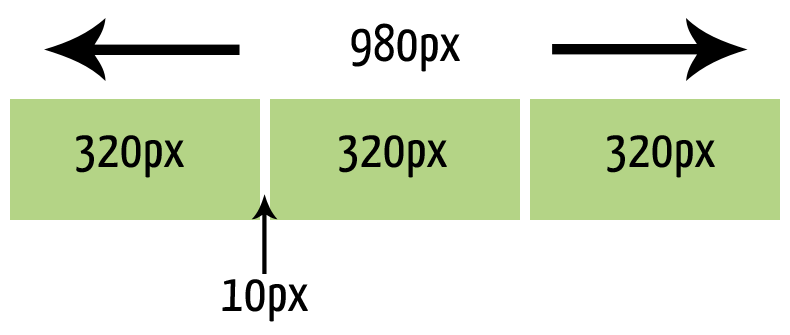

Responsive Web Design
& Wireframing
Steve Hoskins * Webmaster
What is
Responsive Web Design
and why is it important?
It is flexible,
device-independent
design for the web
(one size fits all*)
Responsive vs. Mobile Site
Responsive
- 1 set of content & code to maintain
- Everyone gets the same content
Mobile
- Can focus user tasks
- Can be lean and fast
Basic Components
- Flexible layout
- Fluid images and media
- Media queries
"HTML is responsive by default; it's only not
responsive if you tell it not to be by giving a
pixel value somewhere"
-Chris Coyier
Flexible grids

What are they?
They are grids just as you know them... but they have evolved!
It is adapting the grid when there simply isn't enough room! (you try fitting 16 columns into a mobile screen I dare ya!)
Just like this

uses 12 column grid

On mobile becomes

Real world examples



Why is the grid important
It always has been but today it is even more important to be able to build nice responsive sites.
It is all about understanding the ratio-based relationship between element and container.
Say What???
Yeah exactly this is what us coders have to do!
Target ÷ context x 100 = result
Seriously wtf?
ok ok, so we have this, but it is pixel based it will not be responsive:

To make it responsive it needs to be percentages.
columns - 320 ÷ 980 x 100 = 32.6530612244898%
margin space - 10 ÷ 980 x 100 = 1.02040816%
Styling is therefore:
.third {
width: 32.6530612244898%;
margin-right: 1.020408163265306%;
}
Now try doing that with a non-existent grid! and get it to work across multiple screen sizes!
There are 99 screen sizes the iPhone is one. (say that like Jay-Z)
Generally myself I would use the more standard 33.33% and then use a fixed padding within columns to give the same space no matter what size screen you are on. But that can still only work on a responsive grid system.
What about wireframing?
The same rules apply, you need to know your proposed layout will work. Will it flow naturally on smaller devices? It cannot be too rigid so that it cannot adapt to every screen size. Remember it is not just a desktop and a mobile version it is a structure that is fluid.
Pencil and paper are your friends
Doodle out a quick wireframe idea. Why spend all the time drawing them if then they don't work? Run some tests fold the note in half can you see where it could naturally flow down? A column drop? Will the content shrink too much? if so what should it do? Should it drop? Cut? Increase depth?
It is an in browser tool that enables you to add break points for your main screen sizes and show how you expect your wireframe to react at certain points. You can save your wireframes and send them too, cool ey! It can help you get a better understanding of how your proposed wireframe will work and how possible or how much work it will be.
Mindsets
Mobile first or progressive enhancement
V
Graceful degradation or desktop first
Mobile first
This is where a site is made to work and fit best on a mobile device. Keeping images, scripts etc to as minimal as possible and giving the user a very nice and quick experience. Then, for larger devices, bringing in more content or adding more to it. This is probably the most popular way at the moment.
Desktop First
This is where you give the site all the whizz bang large graphics and whatever else you want and make the desktop version first and then bring that all back as the screen and device changes. Remember just because that image looks smaller the actual physical size is still as big as the original so that mobile user will be downloading that huge image.
What do I think?
Well thanks for asking! But basically the choice is yours! All that I 100% say is take elements from the mobile first approach. This should always be in your mind when you are designing or wireframing your project. If it has to work on mobile then you have to build the full version to be able to adapt down the screen sizes. Putting in a million breakpoints is not the answer!!!
You just said breakpoints... do go on
But let's keep this one short yeah, there has been enough jibba-jabba!
Break points in RWD are browser widths that have a media query declaration to change the layout once the browser is within the declared range.
Nope, you've lost me again!
ok ok, let me simplify this a bit
Media queries are something the developer puts in place to adjust the layout when it is needed to. i.e these 4 columns look realy silly at 25% of a mobile screen so when you are on a mobile screen go full width please.
Like this
/* Desktop styles */
.quarter {
width: 25%;
}
/* Smartphones (portrait and landscape) */
@media only screen
and (min-device-width : 320px)
and (max-device-width : 480px) {
.quarter {
width: 100%;
}
}
But that's enough of that! The least amount of breakpoints you have to put in the better it means the design and wireframe were and how 'fluid' it is.
Conclusion
In a nutshell when it comes to wireframing and designing responsively it all comes down to having it gridded out correctly and to need to 'break' as least as possible (that is why they are called breakpoints). If it is laid out correctly in a working fluid grid from the very start the quicker the process will be for all teams and the better the final result and user experience.
"Webdesign is responsive design.
Responsive Webdesign is web design done right"
-Andy Clarke
Further help, inspiration and suggestions